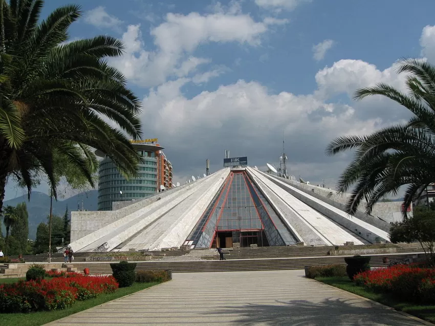
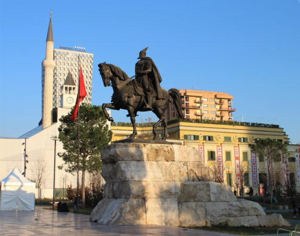
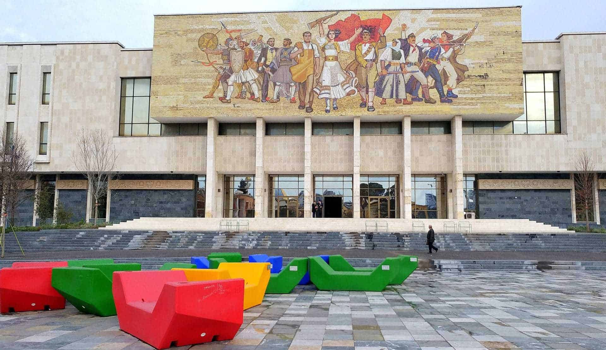

~EKSPLORO TIRANEN~
Vitet e fundit Tirana ka hapur dhe ka rikonstruktuar nje sere pikash turistike sic jane Shtepia me Gjethe,Kulla e Sahatit,Kalaja etj.
~Jashtë Tiranës~
Nëse udhëtoni jashtë Tirane, ju do të mahniteni nga variacionet e peisazhit rural. Në ndryshim nga qyteti modern dhe i gjallë i Tiranës, fshatrat dhe rrethinat janë vërtet të gjelbëruara dhe të qeta. Jeta këtu lëviz ngadalë si në kohët e vjetra. Ka disa ferma agro-turizmi, që vërtet do ju kënaqin me ushqimin shumë të mirë dhe organik të gatuar në mënyrat shqiptare. Merrni pak ajër të pastër në një atmosferë relaksuese jashtë Tiranës.


